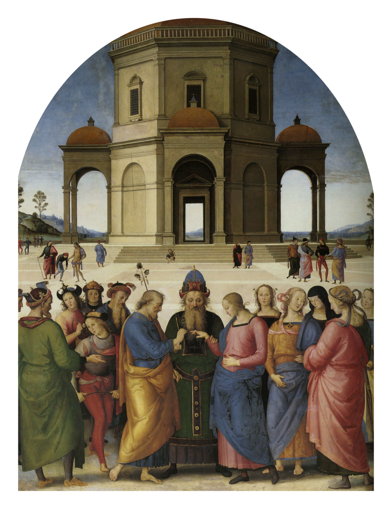

Le Mariage de Marie : une branche fleurie et des espoirs brisés

Dans le tableau du Pérugin, regardez la fine branche que Joseph tient à gauche du prêtre. Les fleurs sont petites et donnent le sens de la scène. D’après la tradition rapportée par La Légende dorée, les prétendants de Marie devaient apporter chacun une baguette. Celle qui fleurirait désignerait l’époux. À gauche, un jeune homme plie la sienne contre son genou.
Le tableau était destiné à la chapelle de l’Anneau, dans la cathédrale de Pérouse. On y conservait une relique tenue pour l’anneau nuptial de Marie. Pour les fidèles qui venaient dans cette chapelle, le petit anneau au milieu du tableau évoquait donc aussi l’objet qu’on y vénérait.
Trois repères sur le tableau du Pérugin
- La branche fleurie. À gauche du prêtre, suivez la baguette que tient Joseph jusqu’aux fleurs.
- La baguette brisée. Au premier plan à gauche, cherchez le jeune homme qui appuie la sienne sur son genou.
- L’anneau. Au centre, regardez les doigts de Marie et de Joseph, juste devant le prêtre.